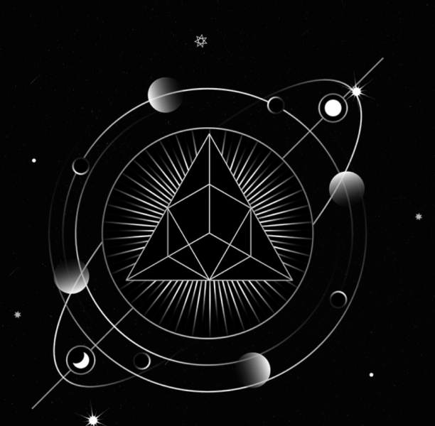
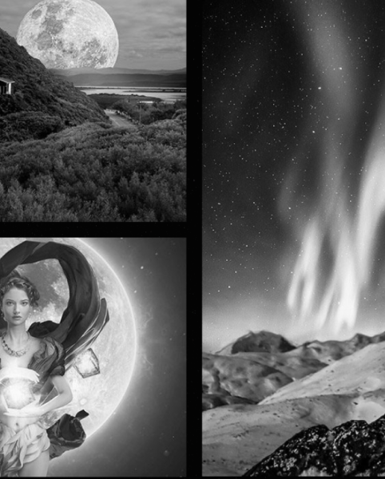

 2022-й для Овнов будет весьма удачным, если не считать кратковременного влияния Плутона. Дело в том, что Плутон считают "агрессивной" планетой, что влияет на поведение Овнов – в конце апреля их прямолинейность может восприниматься как грубость, поэтому, попав в конфликтную ситуацию, лучше сначала обдумать, что вы и как скажете. Вместе с тем апрель станет для Овнов периодом обновления – представители этого знака зодиака могут задуматься о том, что раньше не приходило им в голову, например, о новом проекте. В этом случае важно приложить усилия и не расслабляться – и тогда задуманное превзойдет ваши ожидания.
 Так как затмений в знаке Близнецов в 2022-м не предвидится, год окажется размеренным. После чересчур насыщенного 2021-го Близнецов ждет заслуженная передышка – негатива можно не ждать. Зато позитивных моментов будет более чем достаточно, этому способствуют планеты Юпитер и Сатурн, которые будут взаимодействовать со знаком Близнецов в 2022 году. Астрологи называют Юпитер "планетой возможностей". В 2022-м эта планета подготовила Близнецам множество предложений отправиться в командировку. Не отказывайтесь – встречи, которые ждут вас в этих поездках, окажутся судьбоносными. Особенно повезет Близнецам-преподавателям, потому что Юпитер – это планета, которая поддерживает наставников. Планета будет способствовать повышению авторитета педагогов, рожденных под знаком Близнецов. Немало повезет и работникам сфер медицины и спорта.